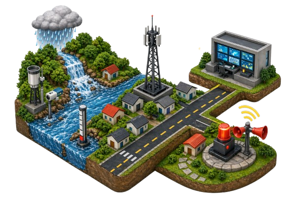
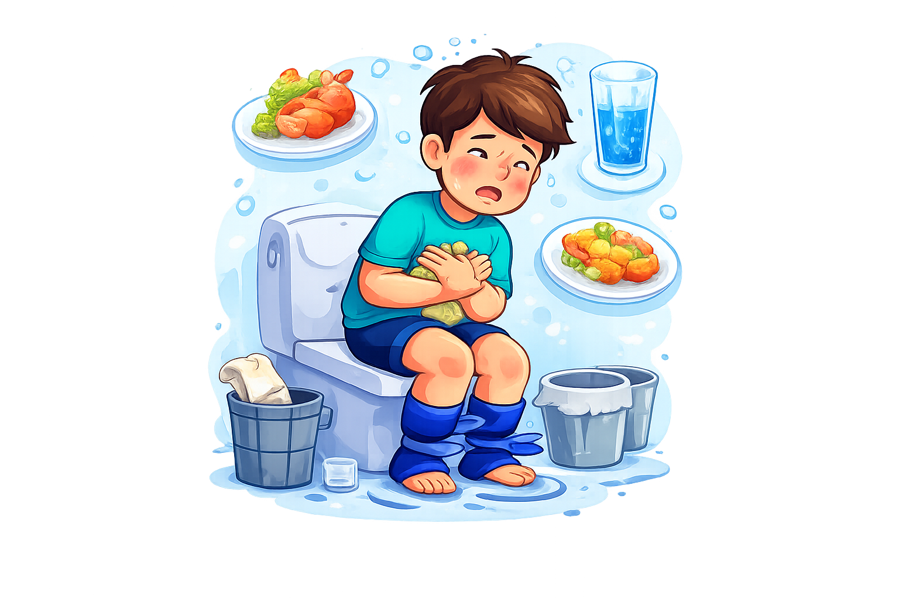
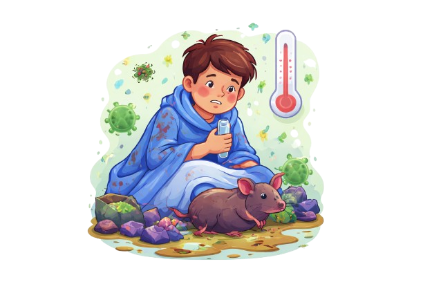
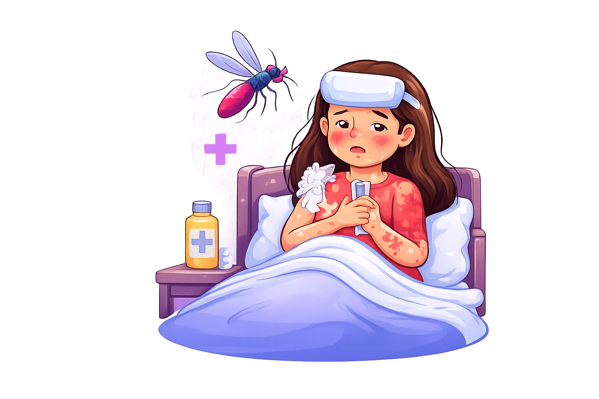

Smart-Resillience System Semarang

S-RES adalah sistem mitigasi banjir berbasis IoT dan AI dengan pendekatan One Health yang menyediakan informasi real-time dan prediktif.
Sistem ini memantau kondisi lingkungan, menganalisis risiko kesehatan, serta memberikan rekomendasi evakuasi dan peringatan dini, dan rujukan fasilitas kesehatan.
S-RES bertujuan mewujudkan Kota Semarang yang tangguh bencana, adaptif, dan berbasis data.
Curah Hujan: 0 mm
Ketinggian Air: 0 cm
Status: AMAN

Pengertian: Gangguan pencernaan dengan frekuensi BAB meningkat dan cair.
Gejala: BAB cair, lemas, dehidrasi, mual.
Dampak: Kekurangan cairan, bisa fatal pada anak.
Penanganan: Oralit, minum air cukup, jaga kebersihan makanan.
Rujukan: Puskesmas / RS terdekat

Pengertian: Infeksi bakteri dari air/lingkungan tercemar urin hewan.
Gejala: Demam tinggi, nyeri otot, mata merah.
Dampak: Kerusakan ginjal & hati jika parah.
Penanganan: Antibiotik & perawatan medis segera.
Rujukan: Rumah Sakit / Dinas Kesehatan

Pengertian: Penyakit akibat virus dengue dari gigitan nyamuk Aedes aegypti.
Gejala: Demam tinggi, nyeri sendi, bintik merah.
Dampak: Pendarahan & penurunan trombosit.
Penanganan: Istirahat, cairan cukup, perawatan RS jika parah.
Rujukan: RS / Klinik terdekat